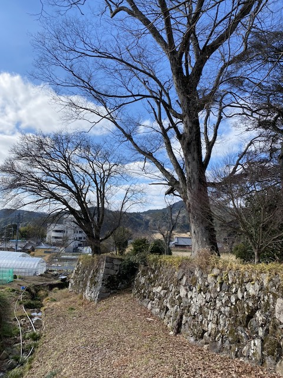

<script src="../library/marked.min.js"></script>
<head>
    <meta name="viewport" content="width=device-width">
    <link rel="stylesheet" href="library/responsive.css">
<title>
地黄城跡
</title>
</head>

<body>
<script>md(`
# 地黄城跡
<font size="2"> 2022/01/22訪問</font>
<font size="2"> 2022/01/22執筆</font>

所在地：大阪府能勢町 <a href="https://goo.gl/maps/UFkApt1S9iWsjHHk6">(34.957518,135.461863)</a><br>
交通手段：阪急妙見口から徒歩2時間半

## 訪問記
出立：阪急石橋駅を午前8時10分

<figure><figcaption>経路</figcaption></figure><br>

<p>
野間の方に行くバスが平日午前にしか出ていないことに気づいたのが電車に乗った後だったので、妙見口から山を越えて歩いてきた回。
</p>

<p>
野間の周辺はホオジロが多い。スズメやハトよりも多い (写真1)。この辺に来たら、樹齢1000年のケヤキ (写真2；野間の大ケヤキ)、道路に突然現れるビニールハウスのピザ屋 (写真3；けやきピザ)をおすすめする。
<figure><figcaption>写真1 ホオジロ</figcaption></figure><br>
<figure>  <figcaption>写真2 野間の大ケヤキとけやき資料館</figcaption></figure><br>
<figure> <figcaption>写真3 ピザ</figcaption></figure><br>
</p>

<p>
地黄城址は石垣が残る城跡である(写真4)。城跡の奥には2016年に廃校になった中学校があるが、この土地は城域ではなく後に森を伐採し開墾されたのではないかと筆者は考えている。写真4の左から、喰違 (くいちがい) 虎口や城の外周、堀の跡などきれいに残っている (明治に修復されている可能性はある)。真ん中の写真のケヤキは樹齢100年以上はありそう。城跡の南側に棚田があるが、この下の方は古い石垣で、上の方は新しいように見えた。しかし詳しくはよくわからない。
</p>
<figure>  <figcaption>写真4 地黄城跡</figcaption></figure><br>


<p>
石垣があるだけで、在りし日の姿を想像しやすくなるので、見ていて楽しい。
</p>

## お城の情報
城跡の前の看板に綺麗にまとめられている (写真5)。
地域で力をつけた豪族である能勢氏が、戦乱で勢力を落としつつも徳川家康に軍功を認められたことで復活した際に築城した。能勢氏のもともとの本拠地は地黄城の北西にある丸山城であるが、地黄城が築かれた際に廃城となった。

<figure><figcaption>写真5 地黄城なりたち</figcaption></figure><br>

`)</script>
</body>